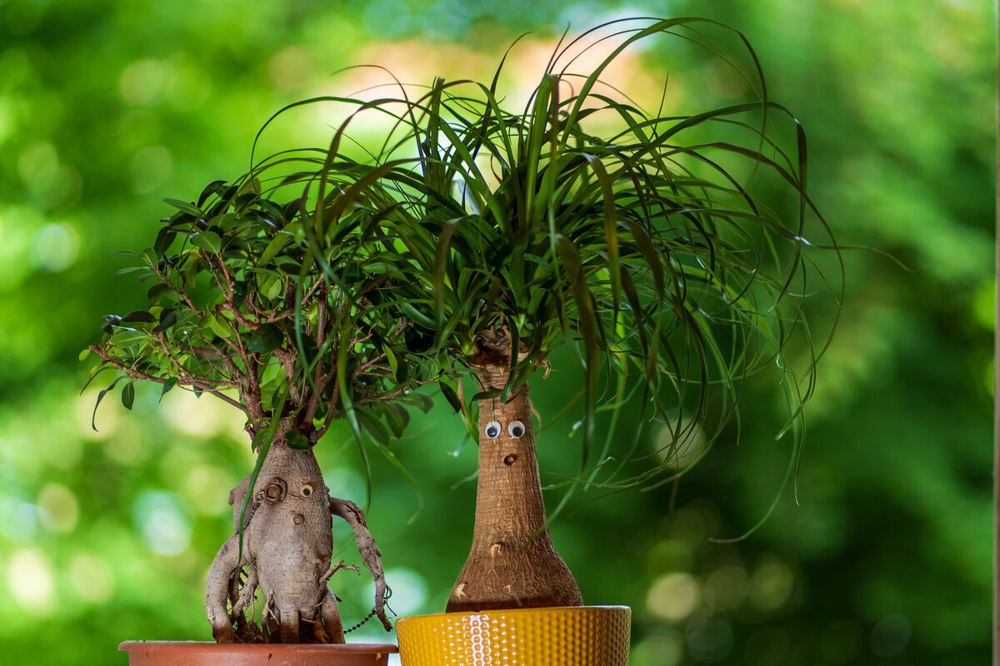

Noch ist es ein bisschen dunkel hier.
0 von 7 Kerzen brennen.
Hier wartet noch etwas.
Es geht auf, sobald alle sieben Kerzen brennen.

Sie hatten Wackelaugen und keine Ahnung, wie sehr wir sie mochten. Noch stehen sie im Dunkeln und gucken. Zünde jedem eine Kerze an. Traurig sein ist erlaubt, kichern auch.
0 von 7 Kerzen brennen.
Es geht auf, sobald alle sieben Kerzen brennen.
